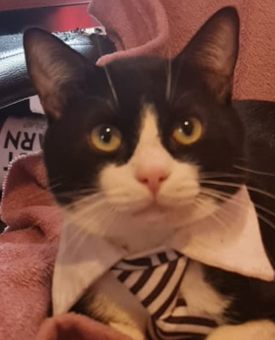

Shanky, el simpatico

Esta es la pagina de el Shanky!
El Shanky les va a enseñar lo que shanky hace en la casa del Shanky.
Aqui el shanky de esta foto toma el sol, a Shanky le gusta salir al balcon de la casa del Shanky a tomar el sol.
Shanky es muy listo, le ayuda a su mami a hacer ropa, aqui estoy yo shanky ayudandole
Shanky sabe que la vida del Shanky suena perfecta, pero Shanky tambien tiene problemas, a Shanky le falta una patita, esto es porque algun animal ataco al Shanky cuando Shanky era un Shanky bebe y le comio su patita, pero Shanky sobrevivio y ahora Shanky es grande
Esto no le importa a Shanky, Shanky es fuerte y corre y salta y hace todo lo que quiera el Shanky aunque a Shanky le falte una patita.